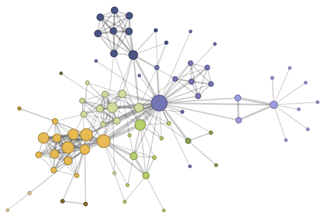
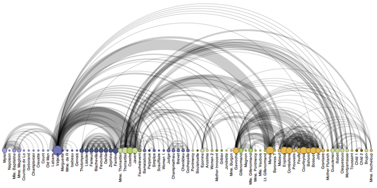
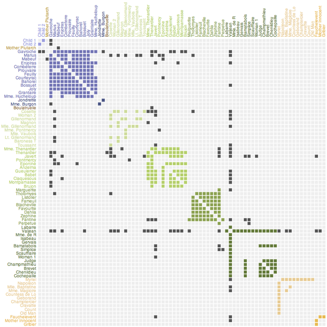

Variations of Network Diagrams
Force Directed Layouts
A common and intuitive approach to network layout is to model the graph as a physical system: nodes are charged particles that repel each other, while links are dampened springs that pull related nodes together. A physical simulation of these forces then determines the node positions; approximation techniques that avoid computing all pairwise forces enable the layout of large numbers of nodes. In addition, interactivity allows the user to direct the layout and jiggle nodes to disambiguate links.
These force-directed layouts are a good starting point for understanding the structure of a general undirected graph. Here we use a force-directed layout to view the network of character co-occurrence in the chapters of Victor Hugo's classic novel, Les Misérables. Node colors depict cluster memberships computed by a community detection algorithm.
Arc Diagrams
An arc diagram uses a one-dimensional layout of nodes, with circular arcs to represent links. While arc diagrams may not convey the overall structure of the graph as effectively as a two-dimensional layout, with a good ordering of nodes it is easy to identify cliques and bridges. And, as with the indented tree layout, multivariate data can easily be displayed alongside nodes. The problem of sorting the nodes in a manner that reveals underlying cluster structure is formally called seriation, and has diverse applications in visualization, statistics, and even archaeology!
Matrix Views
Mathematicians and computer scientists often think of a graph in terms of its adjacency matrix: each value in row i and column j in the matrix corresponds to the link from node i to node j. Using color or saturation instead of text allows values associated with the links to be perceived more rapidly. The seriation problem applies just as much to matrix views as arc diagrams, so the order of rows and columns is important: here we use the groupings generated by a community detection algorithm to order the display. While path-following is harder in a matrix view than in a node-link diagram, matrices have a number of compensating advantages. As networks get large and highly-connected, node-link diagrams often devolve into giant hairballs of line crossings. However, in matrix views line crossings are impossible and with an effective sorting one quickly can spot clusters and bridges. Allowing interactive grouping and reordering of the matrix facilitates even deeper exploration of network structure.